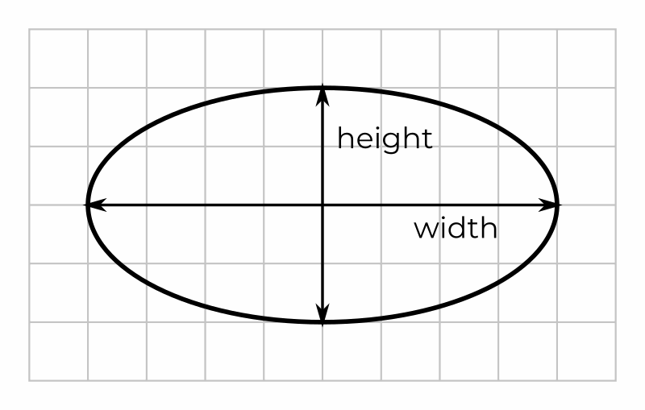

V předchozích lekcích jsme se naučili psát JavaScriptové programy, které už zvládnou hodně věcí a dokážeme napsat i něco skutečně užitečného. Co nám ale zatím chybí je hezká interakce s uživatelem. Budeme chtít, abychom pomocí JavaScriptu dokázali měnit obsah stránky a tak umožnit uživateli opravdu interaktivní zážitek namísto pouhého vypisování textu na obrazovku.
¶ Document Object Model
K interakci se stránkou pomocí JavaScriptu nám slouží takzvaný DOM, neboli Document Object Model. Ten představuje interní reprezentaci webové stránky v paměti prohlížeče. Pojďme si vysvětlit, co to znamená.
Ve chvíli, kdy uživatel zadá do prohlížeče URL adresu, webový prohlížeč pošle po internetu požadavek na server sídlící na této adrese. Server pošle prohlížeči zpátky HTML požadované stránky. Takové HTML může vypadat například takto.
<!DOCTYPE html>
<html lang="en">
<head>
<meta charset="UTF-8" />
<meta name="viewport" content="width=device-width, initial-scale=1.0" />
<link rel="stylesheet" href="style.css" />
<title>Document</title>
</head>
<body>
<div class="header">Hlavička</div>
<div class="cards">
<div class="card">Karta 1</div>
<div class="card">Karta 2</div>
<div class="card">Karta 3</div>
</div>
<div class="footer">Patička</div>
</body>
</html>
Prohlížeč si HTML přečte a vytvoří si z něj v paměti stromovou strukturu, která reprezentuje obsah stránky. Této struktuře říkáme DOM a můžeme ji znázornit jako na obrázku níže.
Jakmile má prohlížeč DOM zkonstruovaný, může úplně zapomenout na HTML a stránku zobrazí podle toho, co je obsaženo v DOMu.
Je to podobné, jak když si například čtete knížku a v hlavě si automaticky vytváříte reprezentaci celého příběhu. takže jej později dokážete odvyprávět i bez knihy. Výhoda pro nás programátory spočívá v tom, že prohlížeč nám umožní DOM pomocí JavaScriptu měnit a tím ovlivňovat, co se zobrazuje na stránce.
To hlavní, co je dobré si z tého sekce zapamatovat je, že HTML je pouze text, který se za života stránky nikdy nemění, kdežto DOM je vnitřní reprezentace stránky, která se měnit dá.
¶ DOM Elementy
Když prohlížeč zpracovává HTML kód, každá značka a její obsah se převedou na takzvaný DOM element.
Každý žlutá krabička na obrázku výše představuje jeden DOM element. Z
hlediska JavaScriptu je důležité, že DOM elementy jsou nový typ hodnoty.
Můžeme je tedy podobně jako čísla, řetězce nebo pravdivostní hodnoty
ukládat do proměnných, předávat jako vstupy funkcím apod. Jak se ale k
nějakému DOM elementu z naší stránky dostaneme? Poslouží nám k tomu
funkce document.querySelector. Pro ukázku použití se vraťme k naší stránce s třemi kartami.
<body>
<div class="header">Hlavička</div>
<div class="cards">
<div class="card">Karta 1</div>
<div class="card">Karta 2</div>
<div class="card">Karta 3</div>
</div>
<div class="footer">Patička</div>
</body>
JavaScript říká DOMu celé naší stránky dokument. Funkce document.querySelector
umí z dokumentu vybrat DOM element podle stejných pravidel, která
používají CSS selektory. Například element hlavičky najdeme snadno podle
jeho třídy. Výsledný DOM element si pak uložíme do proměnné. Zatím
budeme experimentovat v konzoli, abychom si mohli rovnou zobrazit
výsledky.
> const headerElm = document.querySelector('.header');
> headerElm
<div class="header">Hlavička</div>
Jakmile máme element uložený v proměnné, můžeme si s ním začít hrát pomocí jeho vlastností a metod.
¶ Změny obsahu a stylu
První důležitá vlastnost každého DOM elementu je textContent. Ta obsahuje textový obsah našeho elementu. Použitím vlastnosti textContent můžeme tento obsah číst a také měnit.
> const headerElm = document.querySelector('.header')
> headerElm.textContent
Hlavička
> headerElm.textContent = 'Dobré ráno'
> headerElm
<div class="header">Dobré ráno</div>
Snadno také můžeme změnit jakýkoliv styl pomocí vlastnosti style. Takto můžeme změnit například barvu textu a dolní okraj.
> const headerElm = document.querySelector('.header')
> headerElm.style.color = 'white'
> headerElm.style.marginBottom = '2rem'
Všimněte si hned dvou důležitých věcí. Za prvé, názvy CSS vlastností musíme zapisovat velbloudí notací. Je to proto, že kdybychom použili kebab notaci (ano, toto je skutečný název) jako zde
> headerElm.style.margin-bottom = '2rem'
JavaScript by si pomlčku spletl s mínusem a kód by nefungoval. Druhá důležitá věc je, že hodnoty všech CSS vlastností se zapisují pomocí řetězců. Proto dávejte pozor například na takového chyby.
> headerElm.style.color = white
> headerElm.style.marginBottom = 2rem
¶ Změna třídy
Pomocí JavaScriptu můžeme také snadno změnit CSS třídu elementu. Použijeme k tomu vlastnost className. Můžeme tak například snadno měnit třídy hlavičky na naší stránce.
> const headerElm = document.querySelector('.header')
> headerElm
<div class="header">Dobré ráno</div>
> headerElm.className = 'new-header'
> headerElm
<div class="new-header">Dobré ráno</div>
U vlastnosti className je dobré si dát pozor na to, že se vždy mění celý obsah atributu. Dejme tomu, že mám tlačítko s třídou btn.
<button class="btn">Click me</button>
Pokud chci tlačítko vzýraznit a přidat mu další třídu například takto
<button class="btn btn-primary">Click me</button>
musím nastavit obsah celého atributu class.
> const buttonElm = document.querySelector('button')
> buttonElm
<button class="btn">Click me</button>
> buttonElm.className = 'btn btn-primary'
> headerElm
<button class="btn btn-primary">Click me</button>
¶ Změna atributů
Podobně jako obsah, třídy nebo styly můžeme měnit i atributy elementů. Nejšikovnější je například změna obrázku v elementu img. Mějme například následující HTML.
<img class="pet" alt="Kočka" src="img/cat.jpg" />
Pomocí JavaScriptu obrázek snadno změníme takto.
const petElement = document.querySelector('.pet');
petElement.src = 'img/dog.jpg';
petElement.alt = 'Pejsek';
Vidíte, že díky DOMu si můžeme se stránkou hrát zcela dle libosti. Možná se vám už v hlavně rodí odvážné a nadšené nápady jaké úžasné stránky by se daly tatko vyrobit. Vraťme se však na chvilinku ještě k selektorům.
¶ Selektory
Vybírat prvky na stránce pomocí CSS tříd se občas velmi hodí. Jindy nás to ale naopak dostává do problémů. Podívejme se znova na kód stránky s kartami.
<body>
<div class="header">Hlavička</div>
<div class="cards">
<div class="card">Karta 1</div>
<div class="card">Karta 2</div>
<div class="card">Karta 3</div>
</div>
<div class="footer">Patička</div>
</body>
Funkce document.querySelector vždy vrátí první prvek, který na stránce najde. Pokud se chceme dostat například ke druhé kartě, pomocí selectoru .card to nepůjde. Takto získáme pouze kartu první.
const cardElm = document.querySelector('.card');
Jelikož lze v document.querySelector použít libovolný CSS selektor, někoho by mohla napadnout například takováhle frajeřinka.
const cardElm = document.querySelector('.card:nth-child(2)');
Tento kód bude skutečně fungovat, ale rovnou zde na místě vám takové
triky navždy zakazuju. Takovéto komplikované selektory používejte pouze v
případě, že opravdu není vyhnutí. Pro nás existuje jednodušší řešení a
to dát každé kartě unikátní id.
<body>
<div class="header">Hlavička</div>
<div class="cards">
<div id="card1" class="card">Karta 1</div>
<div id="card2" class="card">Karta 2</div>
<div id="card3" class="card">Karta 3</div>
</div>
<div class="footer">Patička</div>
</body>
Pak se ke druhé kartě snadno dostaneme takto.
const cardElm = document.querySelector('#card2');
Používání id je vůbec ten nejvychovanější způsob, jak ze
stránky něco vybírat, protože je ihned vidět, který prvek máme na mysli
a nemusíme řešit žádné CSS hádanky. Dokonce je to tak vychovaný a běžný
způsob, že JavaScript poskytuje speciální funkci document.getElementById, která vybírá na základě id. Kód výše by šel tedy napsat i takto.
const cardElm = document.getElementById('card2');
Všimněte si, že zde napíšeme znak mřížky, protože vstupem pro document.getElementById není CSS selektor, nýbrž samotné id prvku.
Oba z výše uvedených způsobů výběru podle id jsou zcela legitimní a je pouze na vás, který si zvolíte.
¶ Cvičení - Manipulace s DOMem
¶ Novinky
Stáhněte is připravenou webovou stránku, která zobrazuje několik zajímavých zpráv, a zobrazte ji v prohlížeči. Veškeré úkoly z tohoto cvičení proveďte v JavaScriptové konzoli.
- Pomocí
document.querySelectorvyberte elementbodya uložte si jej do proměnnébodyElm. Pomocí této proměnné nastavte barvu pozadí elementu na hodnotu#e9e9e9. - Do jiné proměnné vyberte element s třídou
newsa nastavte mu barvu pozadí na bílou a maximální šířku na60rem. - Vyberte element
h1a nastavte mu třídu nanews__title. Nadpis by měl změnit styl. Nastavte také obsah nadpisu na textAktuální novinky. - Pomocí atributu
idvyberte element obsahující první zprávu. Přidejte do jeho atributuclasstřídupost--main. První zpráva by tak měla mírně změnit svůj styl. Dejte pozor, aby na elementu zůstala i původní třídapost. - Vyberte obrázek v poslední zprávě a změnte jeho atribut
srcna obrázekimg/zprava3-novy.jpg.
¶ Kvíz
Stáhněte si připravenou stránku. Napište JavaScriptový program, který vybere element s třídou question a nastaví jeho obsah na nějakou kvízovou otázku, například
Uveďte příjmení amerického vynálezce, který v roce 1876 jako první úspěšně podal patent na zařízení, které je dnes považováno za první telefon.
Použijte funkci prompt a zeptejte se uživatele na správnou odpověď. Vyberte element s třídou answer__text a nastavte obsah elementu na odpověď od uživatele. Vyberte element s třidou answer. Pokud je odpověď příjmení Bell, přidejte k tomuto elementu třídu answer--correct. V opačném případě přidejte třídu answer--wrong. Dejte pozor, abyste nesmazali původní třídu answer.
¶ Vlastní funkce
Funkce jsou jednou z nejdůležitějších součástí programování. Všimněte
si, jak často vaše programy sestávají z volání různých funkcí. Ve všech
programovacích jazycích je již od začátku mnoho funkcí rovnou k
dispozici. Často ale potřebujeme funkci, která dělá něco specifického,
důležitého pouze pro náš program. Představme si například, že vyměřujeme
pozemek a chceme spočítat plochu pozemku, který má tvar pravoúhlého
trojúhelníka o šířce width a výšce height jako na obrázku.
Naše funkce tedy bude mít dva vstupy - šířku a výšku. Ze školy si pamatujeme, že plochu prvoúhlého trojúhelníka spočítáme tak, že vynásobíme šířku výškou a výsledek vydělíme dvěma. Už tedy víme, co má funkce dělat a zbývá nám tento postup zapsat v JavaScritpu.
(width, height) => (width * height) / 2;
Zápis funkce se dělí na definici vstupů (před šipkou) a tělo (za šipkou). Jako vstupy v kulatých závorkách vidíme dvě slova width a height. To jsou speciální proměnné, kterým říkáme parametry.
Pokud naší funkci zavoláme s nějakými hodnotami, například 5 a 3 jak
napovídá obrázek, JavaScript tyto hodnoty uloží do argumentů. V těle
funkce pak můžeme agrumenty použít jako normální proměnné pro náš
výpočet.
Zbývá nám ukázat si, jak naší funkci zavolat. Zde přichází jedno z nejdůležitějších uvědomění, které v JavaScriptu kdy zažijete.
Funkce je hodnota, podobně jako číslo nebo řetězec!
Funkci tedy můžeme uložit do proměnné stejně jako každou jinou hodnotu. Uložením do proměnné tak vlastně funkci dáme jméno. Všimněte si, že jde o stejný postup jako s jakoukoliv jinou hodnotou.
const age = 25;
const user = 'robert';
const married = false;
const element = document.querySelector('.card');
const landArea = (width, height) => (width * height) / 2;
Jakmile máme funkci takto hezky uloženou v proměnné, můžeme jí zavolat známým způsobem.
landArea(5, 3);
¶ Složitější funkce
Ne každá funkce je tak přímočará, jako výpočet obsahu. Často se stane, že potřebujeme ve funkci provést nějaké rozhodování, výpočet sestávají více kroků apod. Mějme například funkci, která nám vrátí absolutní hodnotu čísla. V takové funkci potřebujeme použít podmínky. Tělo funkce tedy bude obsahuje více příkazů a nevejde se nám na jeden řádek. V takovém případě může tělo funkce být blokem kódu podobně jako je to už známe u podmínek.
const abs = (x) => {
if (x >= 0) {
return x;
} else {
return -x;
}
};
Všimněte si důležitého slovíčka return. To slouží k tomu, abychom z funkce vrátili nějakou hodnotu. Ve chvíli, kdy napíšeme return, kontrola se vrátí zpět na místo, odkud byla funkce volána a vrácená hodnota bude na tomto místě výsledkem naší funkce.
const delka = abs(-10);
Vzhledem k tomu, že příkazem return se průběh funkce ukončuje, můžeme funkce abs napsat také takto.
const abs = (x) => {
if (x >= 0) {
return x;
}
return -x;
};
Proč není else potřeba? Zde je nuté oprášit logické uvažování. Pokud bylo x kladné nebo nula, funkce skončila u prvního return a k druhému se vůbec nedostala. Pokud se tedy vykonávání funkce dostalo až k druhému return, znamená to, že x musí být záporné, jinak by funkce skončila mnohem dřív a sem bychom se vůbec nedostali. Nemusíme už tedy říkat žádné else a prostě vrátíme -x.
Zkušení programátoři else vynechávají, pokud není potřeba. Je proto dobré si na tento způsob zápistu zvyknout.
¶ Cvičení - Vlastní funkce
¶ Obsah elipsy
Zlovolní zahrádkáři nám chtějí stížit výměru pozemků a proto si pořídíli pozemek ve tvru elipsy.

Z matematiky víme, že známe-li šířku a výšku elipsy, její obsah je polovina šířky krát polovina výšky krát číslo π.
Založte si prázdnou stránku s JavaScriptovým souborem a napište funkci ellipseArea, která spočítá plochu pozemku dle zadané šířky a výšky. Číslo π najdete v JavaScriptu v proměnné Math.PI.
¶ Maximum ze dvou čísel
Napište funkci max2, která vrátí větší ze dvou zadaných čísel. V JavaScriptu už na toto funkce existuje, jmenuje se Math.max. Pro účely tohoto příkladu se budeme tvářit, že o ní nevíme.
¶ Rámeček
Napište funkci makeBorder, která jako vstup obdrží DOM
element. Funkce nebude nic vracet, pouze předanému elementu nastaví
černý rámeček tlustý 2 pixely. Vložte na stránku nějaký obsah a v
konzoli vyzkoušejte, že vaše funkce funguje.
¶ Povinné čtení na doma
Představme si nějaký DOM element, který na sobě má navázáno vícero CSS tříd. Například nějaké přepínací tlačíko, které začíná ve stavu ‘vypnuto’.
<button id="login-btn" class="btn btn--off btn--primary">Login</button>
Dejme tomu, že bychom chtěli prostřední třídu odstranit a tím tlačítko přepnout do stavu ‘zapnuto’. Se současnými dovednostmi můžeme udělat například toto.
const btnElm = document.querySelector('#login-btn');
btnElm.className = 'btn btn--primary';
Takto ovšem nastavujeme celý atribut class. Musíme tedy
znát všechny ostatní třídy, které na tlačítku máme. To nám začne časem
velmi znepříjmňovat život. JavaScript však nabízí vlastnost classList, díky které můžeme s CSS třídami na elementu pracovat mnohem přímočařeji. Výše zmíněný úkol pak vyřešíme takto.
const btnElm = document.querySelector('#login-btn');
btnElm.classList.remove('btn--off');
Metoda remove udělá veškerou špinavou práci za nás
nehledě na to jaké další CSS třídy jsou na element navázány. Pokud
chceme naopak třídu přidat, použíjeme metodu add.
const btnElm = document.querySelector('#login-btn');
btnElm.classList.add('btn--off');
¶ Přepínání
Naše tlačítko funguje jako přepínač. Chceme, aby například na
kliknutí přepnulo stav z ‘vypnuto’ na ‘zapnuto’ a obráceně. Což v řeči
programátorské znamená: když element obsahuje třídu btn--off tak ji odstraň, v opačném případě ji přidej. Takový kód můžeme napsat pomocí metody contains.
const btnElm = document.querySelector('#login-btn');
if (btnElm.classList.contains('btn--off')) {
btnElm.classList.remove('btn--off');
} else {
btnElm.classList.add('btn--off');
}
Přepínání tříd je však tak častá situace, že classList má přímo na toto metodu toggle. Ta dělá přesně to, co náš kód výše. Můžeme jej tak zkrátit takto.
const btnElm = document.querySelector('#login-btn');
btnElm.classList.toggle('btn--off');
Pokud se daná CSS třída na elementu nachází, metoda toggle ji odstraní. Pokud tam naopak není, metoda toggle ji přidá.
Pomocí vlastnosti classList jsme opět rozšířili náš arzenál pro manipulaci s obsahem stránky a také máme život zase o kousek jednodušší.
¶ Doporučené úložky na doma
¶ Kalkulačka
Představte si úplně obyčejnou kalkulačku pouze s tlačítky pro čísla, čtyřmi základními operacemi a tlačítkem pro rovná se. Pokud na takové kalkulačce chcete spočítat něco velmi jednoduchého, například 2 + 3, musíme stisknout tlačíko 2, poté +, pak 3 a pak =. Kalkulačka tedy nespočítá náš výsledek ve chvíli, kdy mačkáme +, ale až ve chvíli, kdy mačkáme =. Musí si tedy zapamatovat, co jsme namačkali, a všecho spočítat až ve chvíli, kdy stiskneme =.
Napište funkci calc se třemi vstupy num1, op a num2, které představují první zadané číslo, zadanou operaci jako řetězec a druhé zadané číslo. Operace může být '+', '-', '*' nebo '/'. Funkce vrátí výsledek výpočtu pro zadanou operaci.
Příklad použití
> calc(2, '+', 3)
5
> calc(3, '*', 7)
21
> calc(10, '/', 4)
2.5
¶ Dovednosti
Stáhněte si webovou stránku, na které najdete připravené tři posuvníky, které ukazují úroveň dovedností v různých oblastech.
- Doplňte do stránky JavaScriptový program, který pomocí funkce
promptpožádá uživatele aby vyjářil svoji úroveň postupně ve všech zobrazených dovednostech jako číslo 0 - 100. Program pak nastaví posuvníky na stránce na odpovídající délku a hodnoty u posuvníků na uživatelem zadaná čísla. - Na samém začátku vašeho programu vytvořte funkci
updateSkill, která bere dva vstupy: textový řetězec představujícíidelementu a číslo mezi 0 - 100. Tato funkce při zavolání nastaví posuvník se zadanýmidna správnou hodnotu. Použijte tuto funkci ve vašem kódu, abyste nemuseli při nastavování posuvníků psát třikrát po sobě téměř stejný kód.
¶ Python zaokrouhlování
Jak jistě znalci jazyka Python dobře vědí, funkce round v
tomto jazyce zaokrouhluje malinko jinak, než jsme zvyklí. Pokud je
desetinná část čísla přesně 0.5, Python zaokrouhluje k nejbližšímu
sudému číslu. JavaScriptová funkce Math.round naopak
provádí zaokrouhlování způsobem, na který jste zvyklí, tedy pro 0.5 vždy
nahoru. Někomu by se po po Pythonovském zaokrouhlování mohlo stýskat.
Napište proto funkci jménem round, která bude zaokrouhlovat čísla na celé jednotky podle následujících pravidel.
- Pokud je desetinná část menší než 0.5, zaokrouhlujeme dolů.
- Pokud je desetinná část větší než 0.5, zaokrouhlujeme nahoru.
- Pokud je desetinná část přesně rovna 0.5, zaokrouhlujeme k sudému číslu. Tedy například 3.5 se zaokrouhlí na 4, naopak 2.5 se zaokrouhlí na 2.
V tomto cvičení se vám může hodit funkce Math.trunc, která umí odříznout desetinnou část čísla.